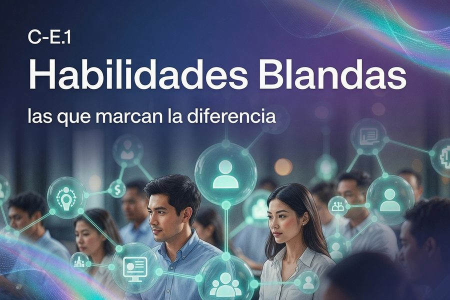

LÍNEA C · DESARROLLO PERSONAL
LISTO
C-E.1
Habilidades Blandas
las que marcan la diferencia
Desarrollar y fortalecer las habilidades blandas fundamentales para la vida, potenciando el bienestar y el progreso integral de las personas.
Ver curso →